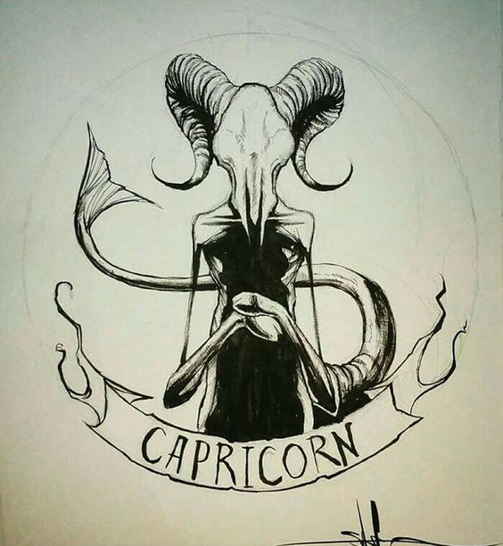
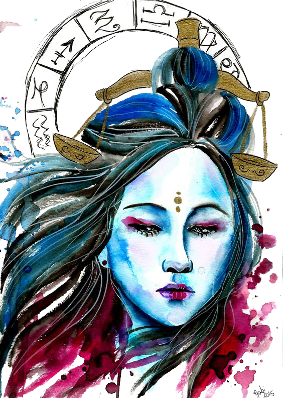

Persistent Capricorn approaches love as serious business. As the zodiac’s most goal-oriented sign, you’re not one to play around. Chances are, you’ve got a 10-year plan for your life, and your partner must forward that agenda. Flings aren’t really your bag; you’d rather be alone than jump from partner to partner. With this attitude, it’s no wonder many Capricorns marry more than once.
 The mountain goat is the symbol for this sign because of the characteristic of the goat to climb higher and higher without losing his footing. Capricorn people are the type that are goal oriented and driven to succeed despite all odds. They will work long and hard hours toward a purposeful goal. Self-disciplined and successful, it is no wonder that some of the world’s greatest scientists, leaders, and teachers have been Capricorn.
Capricorns are the superheroes when It comes to making realistic, logical decisions. Their ability to cut through the red tape and see the bottom line is what makes them a real asset to any relationship or occupation where teamwork is valued. Capricorn are family oriented, but will keep their distance if the family is perceived to be violent, harmful, or unfulfilling.